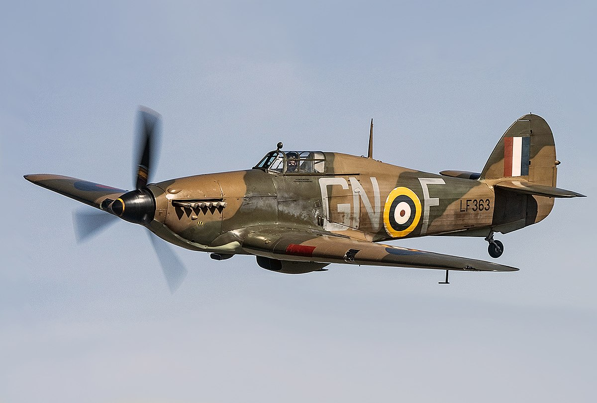

Aviones

El Supermarine Spitfire fue un caza monoplaza británico usado por la Royal Air Force (RAF) y muchos otros países Aliados durante la Segunda Guerra Mundial. El Spitfire continuó siendo usado hasta los años 1950, tanto como caza de primera línea como en funciones secundarias. Fue producido en mayores números que ningún otro avión británico y fue el único caza de los Aliados en producción durante toda la guerra.
Entre septiembre de 1940 y mayo de 1941 se llevó a cabo el bombardeo sostenido sobre ciudades británicas. Los británicos contestaron con ataque a ciudades alemanas. El 15 de septiembre fue el día que más ataques padeció Londres. Sin embargo, la contienda de ese día (conmemorado actualmente como Battle of Britain Day) finalizó con la victoria británica. Hitler acabó aplazando indefinidamente la Operación León Marino hasta finalmente anularla. La conquista de Inglaterra no era necesaria para destruirla como adversaria (de hecho, Solá Bartina (2013) cuestiona la operación como estrategia real), de modo que se concentró en el bombardeo indiscriminado, principalmente nocturno para evitar la confrontación aérea.

Como caza, el Hurricane tenía algunos inconvenientes. Era un poco más lento que el Spitfire I y II y el Messerschmitt Bf 109E, y los perfiles de ala más gruesos comprometían la aceleración; pero podría superar a ambos. A pesar de sus deficiencias de desempeño contra el Bf 109, el Hurricane aún era capaz de destruir al caza alemán, especialmente en altitudes más bajas. La táctica estándar de los 109 era intentar escalar más alto que los cazas de la RAF y "rebotarlos" en picada; los Hurricanes podrían evadir tales tácticas convirtiéndose en un ataque o entrando en una "zambullida en sacacorchos", que los 109, con su menor velocidad de balanceo, encontraron difícil de contrarrestar. Si un 109 quedó atrapado en una pelea de perros, el Hurricane era tan capaz de superar al 109 como el Spitfire. En una persecución por la popa, el 109 podría evadir el huracán.
